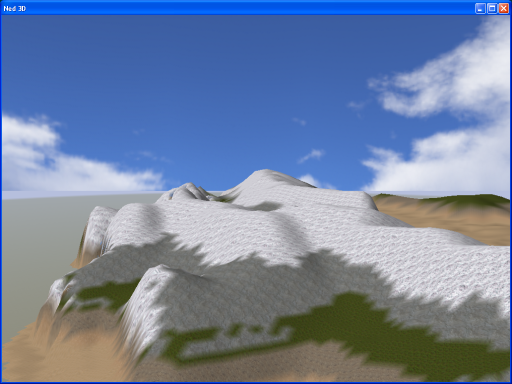
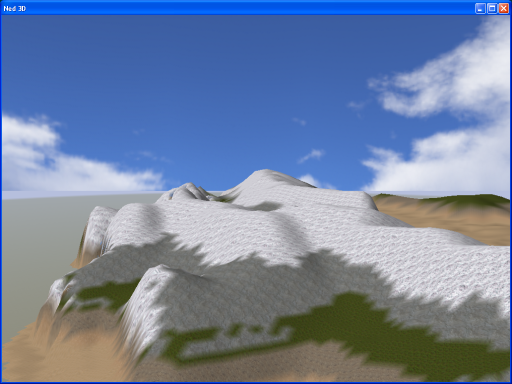

Jonathon Doran and Ian Parberry, "Controlled Procedural Terrain Generation Using Software Agents", IEEE Transactions on Computational Intelligence and AI in Games , Vol. 2, No. 2, pp. 111-119, June 2010. [manuscript, BibTeX]
Abstract
Procedural terrain generation is used to create landforms for applications such as computer games and flight simulators. While most of the existing work has concentrated on algorithms that generate terrain without input from the user, we explore a more controllable system that uses intelligent agents to generate terrain elevation heightmaps according to designer-defined constraints. This allows the designer to create procedural terrain that has specific properties.
 
